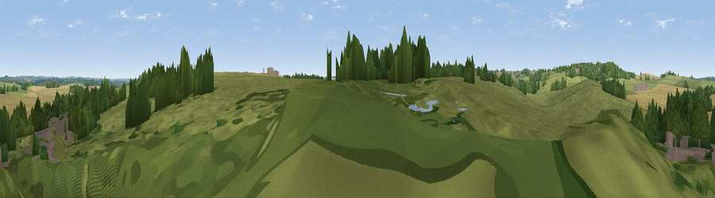

Viewpoint near Foxton
#37778 in England · top 69% of its area beats it · near Foxton · path 199 mWhere it is
The exact computed spot (SP 69221 89585). Click the marker for map links.
Public access: the nearest public right of way is about 199 m away — the final stretch may cross private land. Computed from Natural England's CRoW access layer and OpenStreetMap rights of way — not the legal definitive map. Always verify locally.
The view, rendered

A 360° render of this exact spot computed from the terrain model, tree cover and land cover — summer colours, afternoon light, calibrated against photographs of famous viewpoints. Real trees, hedges and buildings will differ in detail.
The panorama
Grey silhouette: terrain skyline in each direction (720 bearings, Earth curvature and refraction included). Dashed green: skyline with trees (+15 m) and buildings (+8 m) as obstacles. Blue strip: how far the ground is visible on each bearing.
Where the view opens
Wedge length = distance to the farthest visible ground on that bearing (vegetation-aware). Rings at 10, 25 and 50 km.
What fills the view
59% grassland · 22% woodland · 14% cropland · 5% built-up
Angular shares of the visible panorama (visual magnitude), not map area. Landscape diversity 0.47 (0–1 Shannon).
Key numbers
More beautiful places nearby
The staircase of upgrades: each row has a higher view potential than everything closer. Driving times are estimates from straight-line distance, calibrated against real road routing — check an actual route before setting out.
| Place | Direction | Drive | Score |
|---|---|---|---|
| Viewpoint near Gumley | SW · 2 km | ~5 min | 38.5 |
| Smeeton Hill | NW · 2 km | ~6 min | 39.5 |
| Burnmill Hill | ESE · 4 km | ~9 min | 43.6 |
| Viewpoint near Sibbertoft | S · 6 km | ~13 min | 48.3 |
| Viewpoint near Sibbertoft | S · 7 km | ~14 min | 48.8 |
| Viewpoint near East Norton | NE · 13 km | ~24 min | 49.6 |
| Viewpoint near Cold Ashby | SSW · 14 km | ~25 min | 61.7 |
| Viewpoint near Burrough on the Hill | NNE · 23 km | ~39 min | 66.0 |
52.49978, -0.98174 · source: osm viewpoint · position refined by local search. Computed location — check access rights before visiting.